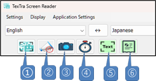
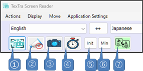
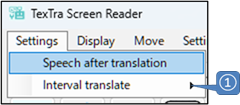

Main screen

Main window

① Reads, translates, and reads aloud the
text within the specified frame.
② Stops speech
playback.
③ Range Selection Translation Button
(Ctrl + F10)
Translates the text within the selected area
of the screen.
④ Fix the screen region to be
translated.
Once fixed, the same region will remain the
target even if the form is moved.
⑤ Open frame
window.
⑥ Open translation log form.
Frame window

① Same with ① on main
window.
② Same with ② on main
window.
③ Same with ③ on main
window.
④ Same with ④ on main
window.
⑤ Restores the form size to its default state.
⑥ Resize the form to its minimum
size.
⑦ Open main window.
Settings

① Configure automatic text retrieval and
translation at regular intervals.
Set the time interval
for reading text.
Automatically perform translation when
the text has changed.

Form
Relocation
Press Ctrl
+ F9 to move the frame window so that it surrounds
the text at the current cursor position.
You can
also restore the form from its minimized state.
Range
Selection Translation
Similar to the Windows Print
Screen feature, the screen dims, allowing you to select a specific area.
The text within the selected area is then translated.
You can activate this feature using Ctrl +
F10.
Frame window, Movement &
Resizing
Use Ctrl + Shift /Alt + Arrow Keys to adjust the
form's position and size.